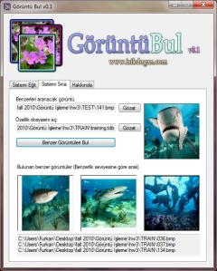

İçerik tabanlı görüntü erişimi: GörüntüBul v0.1
January 17, 2011
İçerik tabanlı görüntü erişim teknikleri, genellikle geniş görüntü veritabanlarında istenilen özelliklerde sayısal görüntü aramakta kullanılmaktadır. Görüntü erişiminde renk, doku, şekil vb. özelliklerden faydalanılabilmektedir. İçerik tabanlı görüntü erişiminin basit bir uygulaması olan 'GörüntüBul' ile seçilen bir görüntünün renk özelliklerine bakılarak benzer görüntüler belirtilen dizinler altında aranabilmektedir.
Yapılan her aramada, belirtilen dizin altındaki bütün görüntülerin tekrar tekrar işlenmemesi için, seçilen her dizin için bir kez olmak üzere 'Sistemi Eğit' sekmesi altında özellik dosyası oluşturulması gerekmektedir. Daha sonra bu dosya kullanılarak 'Sistemi Sına' sekmesinden istenilen görüntü ile arama yapılabilmektedir.
Görüntü arşivi içerisinde, seçilen bir görüntüye benzer görüntüleri bulmakta kullanılabilecek bu uygulamayı aşağıdaki linkten ücretsiz indirebilirsiniz:
Uygulamanın temel çalışma mantığını ve kaynak kodlarını yazının devamında inceleyebilirsiniz.
Yöntem
24 Bit bitmap görüntülerde her piksel kırmızı(R), yeşil(G) ve mavi(B) her bileşen 8-bit olmak üzere 24 bit ile ifade edilmektedir.
Her renk bileşeninin en değerli (en soldaki) iki bitini alarak, rengin temel özelliği hakkında fikir verebilen 6-bitlik bir sayı elde edebiliriz. Aslında yapılan işlemin basit bir tekdüze renk azaltma örneği olduğunu söyleyebiliriz.
Örneğin bir piksel için; R: 00110101, G: 10011001, B: 11001011 olursa, Elde edeceğimiz sayı: 001011 olacaktır.
Görüntüdeki her piksel için elde edilen 6-bitlik değerlerin görüntüde bulunma sıklıklarını bularak (bkz. 64-bin renkli histogram) resimdeki renk özelliklerini basit anlamda çıkarabiliriz.
Özellik dosyasının oluşturulması sırasında, belirtilen dizindeki bütün görüntüler için yukarıdaki yöntemle oluşturulan özellik vektörleri dosyaya yazılmaktadır. Daha sonra görüntü arama esnasında, seçilen görüntü için özellik vektörü çıkarılmakta ve seçilen özellik dosyası içerisindeki vektörlerden uzaklık olarak en yakın 3 tanesine karşılık gelen görüntüler ve dosya konumları kullanıcı arayüzünde görüntülenmektedir.
Görüntü işleme, Bilgisayarla görü, Programlama